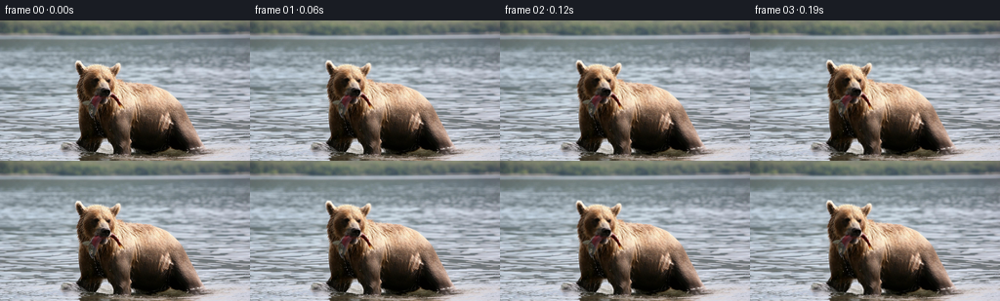

候选 01 · 2026-11-08T17:34:48.596112+00:00 · 点开播放与检查图
inspection.png

transition_check.png

代码变化
--- 上一保存版本
+++ 本次保存版本
@@ -0,0 +1,176 @@
+"""Image-based, deterministic wildlife animation, using only the supplied RGB photograph.
+All deformations are mathematical coordinate fields; no other imagery is used.
+"""
+from pathlib import Path
+import numpy as np
+from PIL import Image
+import cv2
+from scipy.ndimage import gaussian_filter
+from artifact_io import save
+
+ROOT = Path(__file__).resolve().parent
+W,H,N = 256,144,81
+Y,X = np.mgrid[:H,:W].astype(np.float32)
+source = np.asarray(Image.open(ROOT/'first_frame.png').convert('RGB'))
+
+# Pins along the silhouette and anatomical features. A continuous thin-plate
+# coordinate field moves the ears, face, shoulders and feet together, rather
+# than sliding rectangular pieces of the photograph.
+head = np.array([[79,43],[82,51],[84,58],[96,47],[109,48],
+ [121,46],[117,55],[115,63],[81,69],[82,81], [91,60],
+ [108,61],[101,68],[107,73],[106,79],[113,75],[89,78]],float)
+fish = np.array([[96,83],[90,86],[94,92],[97,99],[102,85],[116,82],[122,89]],float)
+neck = np.array([[83,91],[92,102],[105,94],[119,87],[122,71]],float)
+body = np.array([[130,66],[145,68],[160,73],[174,82],[182,95],
+ [191,110],[197,121],[205,131],[185,133],[171,117],[163,132],
+ [145,134],[143,111],[143,89],[125,98],[103,111],[107,118]],float)
+farleg = np.array([[84,108],[83,120],[80,125],[87,134],[96,135],[99,120]],float)
+nearleg = np.array([[116,108],[117,121],[119,136],[130,137],[133,123],[131,108]],float)
+# Still surroundings impose a stationary camera and retain the riverbank.
+anchors=[]
+for y in [0,20,35,143]:
+ for x in np.linspace(0,255,12): anchors.append((x,y))
+for y in [55,80,105,127]:
+ for x in [0,30,55,226,255]: anchors.append((x,y))
+anchors=np.asarray(anchors,float)
+pts=np.concatenate([head,fish,neck,body,farleg,nearleg,anchors])
+counts=[len(g) for g in [head,fish,neck,body,farleg,nearleg,anchors]]
+ends=np.cumsum([0]+counts)
+
+def kernel(d2):
+ return .5*d2*np.log(d2+1e-10)
+
+# Precompute a source-coordinate TPS. Its inverse is obtained by three fixed
+# point iterations below, providing a smooth, texture-preserving resampling.
+p=pts/100.
+k=kernel(((p[:,None,:]-p[None,:,:])**2).sum(-1))
+k+=np.eye(len(p))*2e-5
+P=np.c_[np.ones(len(p)),p]
+L=np.block([[k,P],[P.T,np.zeros((3,3))]])
+xy=np.stack([X,Y],axis=-1).reshape(-1,2)/100.
+B=np.c_[kernel(((xy[:,None,:]-p[None,:,:])**2).sum(-1)),np.ones(len(xy)),xy]
+solver=np.linalg.solve(L,np.r_[np.eye(len(p)),np.zeros((3,len(p)))])
+# Linear map from the small set of moving pins to the dense displacement field.
+D=(B@solver).astype(np.float32)
+
+def smooth(q):
+ q=np.clip(q,0,1)
+ return q*q*(3-2*q)
+
+def positions(t):
+ # Weight-shift followed by a short, slow wading step.
+ travel=-3.0*smooth(t/4.8)
+ sway=.65*np.sin(1.6*t)
+ bob=.55*np.sin(2.0*t)
+ trans=np.array([travel+sway,bob])
+ angle=.075*np.sin(1.12*t)
+ co,si=np.cos(angle),np.sin(angle)
+ R=np.array([[co,-si],[si,co]])
+ pivot=np.array([106.,87.])
+ hoff=np.array([1.8*np.sin(.95*t), -2.3*np.sin(1.25*t)])
+ def hm(q): return (q-pivot)@R.T+pivot+trans+hoff
+ h=hm(head)
+ # A small yaw, with the muzzle leading while the skull remains rigid.
+ facial=np.exp(-((head[:,0]-104)/14)**2-((head[:,1]-71)/10)**2)
+ h[:,0]+=1.2*np.sin(.85*t)*facial
+ f=hm(fish)
+ # Fish swings from the bite, driven by gravity and the bear's head bob.
+ bite=hm(np.array([[106.,77.]]))[0]
+ a=.10*np.sin(2.9*t)+.035*np.sin(5.8*t)
+ RR=np.array([[np.cos(a),-np.sin(a)],[np.sin(a),np.cos(a)]])
+ f=(f-bite)@RR.T+bite
+ n=neck+trans
+ n += (hm(neck)-neck-trans)*np.array([.66,.85,.62,.58,.75])[:,None]
+ b=body+trans
+ # The wet coat expands almost imperceptibly with breathing.
+ breathe=.45*np.sin(2.5*t)
+ b[:,0]+=breathe*(body[:,0]-145)/50
+ b[:,1]+=.38*np.sin(1.9*t)*(body[:,1]-135)/65
+ b[:4] += (hm(body[:4])-body[:4]-trans)*np.array([.42,.19,.07,0])[:,None]
+ far=farleg+trans
+ q=smooth((t-.9)/2.)
+ lift=np.sin(np.pi*np.clip((t-.9)/2.,0,1))
+ weight=np.clip((farleg[:,1]-106)/27,0,1)
+ far[:,0]+=-3.8*q*weight
+ far[:,1]+=-3.0*lift*weight
+ near=nearleg+trans
+ q2=smooth((t-2.8)/2.)
+ lift2=np.sin(np.pi*np.clip((t-2.8)/2.,0,1))
+ weight2=np.clip((nearleg[:,1]-108)/28,0,1)
+ near[:,0]+=-2.6*q2*weight2
+ near[:,1]+=-2.0*lift2*weight2
+ return np.concatenate([h,f,n,b,far,near,anchors])
+
+# Perspective-scaled flowing surface. The subject protection is a smooth
+# coordinate envelope, calculated from geometry, not an input segmentation.
+waterdepth=np.clip((Y-20)/124,0,1)
+river=smooth((Y-18)/22)
+protect=np.exp(-(((X-143)/65)**4+((Y-91)/50)**6)*1.6)
+protect=np.maximum(protect,np.exp(-(((X-99)/27)**6+((Y-63)/31)**6)*1.7))
+waterweight=river*(1-protect)
+
+# Gaussian micro-droplets integrate to subpixel highlights at this resolution.
+def droplet(im,x,y,size,alpha,color):
+ l=max(0,int(x-2)); r=min(W,int(x+3)); u=max(0,int(y-3)); d=min(H,int(y+4))
+ if l>=r or u>=d:return
+ xx=X[u:d,l:r]; yy=Y[u:d,l:r]
+ a=alpha*np.exp(-((xx-x)/(size*.7))**2-((yy-y)/size)**2)
+ im[u:d,l:r]=im[u:d,l:r]*(1-a[...,None])+np.asarray(color)*a[...,None]
+
+
+def frame(t):
+ disp=(D@(positions(t)-pts)).reshape(H,W,2).astype(np.float32)
+ sx=X-disp[...,0]; sy=Y-disp[...,1]
+ for _ in range(3):
+ du=cv2.remap(disp,sx,sy,cv2.INTER_LINEAR,borderMode=cv2.BORDER_REFLECT_101)
+ sx=X-du[...,0]; sy=Y-du[...,1]
+ # Advect the original small wave textures. At t=0 the field is zero.
+ xd=.6*(np.sin(Y*.29-t*1.9)-np.sin(Y*.29))
+ xd+=.85*waterdepth*(np.sin(Y*.16+X*.025-t*.9)-np.sin(Y*.16+X*.025))
+ yd=.32*(np.sin(X*.15+Y*.47-t*2.2)-np.sin(X*.15+Y*.47))
+ yd+=.25*waterdepth*(np.sin(Y*.75+X*.09-t*3)-np.sin(Y*.75+X*.09))
+ wx=sx+xd*waterweight; wy=sy+yd*waterweight
+ # Elliptic pressure ripples from the bear's submerged paws.
+ for cx,cy,phase in [(118,137,0),(196,134,1.6),(85,132,3.1)]:
+ rx=X-cx; ry=(Y-cy)*3.1
+ rr=np.sqrt(rx*rx+ry*ry+1)
+ env=np.exp(-rr/31)*smooth((Y-130)/8)
+ v=.55*(np.sin(rr*.59-t*4.8+phase)-np.sin(rr*.59+phase))*env
+ wy+=v
+ wx+=v*rx/(rr+1)*.6
+ im=cv2.remap(source,wx,wy,cv2.INTER_CUBIC,borderMode=cv2.BORDER_REFLECT_101).astype(np.float32)
+ # Falling water beads from the salmon, with a few tiny paw splashes.
+ mouth=positions(t)[ends[1]+3]
+ for j in range(3):
+ age=(t-.23-j*.41)%1.34
+ active=smooth(t/.3)
+ if age<.8:
+ x=mouth[0]+.8*np.sin(j*2.4)+1.0*age
+ y=mouth[1]+5+46*age*age
+ if y<136:
+ droplet(im,x,y,.53+.15*age,.57*active,[188,191,166])
+ droplet(im,x+.1,y-.25,.28,.28*active,[226,227,209])
+ for start,cx in [(1.15,83),(2.4,86),(3.3,119),(4.3,117)]:
+ tau=t-start
+ if 0<tau<.48:
+ for j in range(4):
+ vx=(j-1.5)*8
+ vy=-12-j*2.2
+ x=cx+vx*tau+travel_at(t)
+ y=135+vy*tau+40*tau*tau
+ droplet(im,x,y,.45,.32*np.sin(np.pi*tau/.48),[190,194,179])
+ # Extremely slow optical push-in; no artificial parallax of the riverbank.
+ zoom=1+.015*smooth(t/5)
+ zx=(X-128)/zoom+128
+ zy=(Y-80)/zoom+80
+ im=cv2.remap(im,zx.astype(np.float32),zy.astype(np.float32),cv2.INTER_CUBIC,borderMode=cv2.BORDER_REFLECT_101)
+ return np.clip(np.rint(im),0,255).astype(np.uint8)
+
+def travel_at(t): return -3*smooth(t/4.8)+.65*np.sin(1.6*t)
+
+if __name__=='__main__':
+ frames=np.empty((N,H,W,3),np.uint8)
+ frames[0]=source
+ for i in range(1,N): frames[i]=frame(i/16)
+ save(frames,ROOT)
+ print('Saved',frames.shape,'RGB frames; first frame exact:',np.array_equal(frames[0],source))
命令 4 · 2026-11-08T17:34:30.100770+00:00/bin/bash -lc "cat > generate.py <<'PY'
\"\"\"Image-based, deterministic wildlife animation, using only the supplied RGB photograph.
All deformations are mathematical coordinate fields; no other imagery is used.
\"\"\"
from pathlib import Path
import numpy as np
from PIL import Image
import cv2
from scipy.ndimage import gaussian_filter
from artifact_io import save
ROOT = Path(__file__).resolve().parent
W,H,N = 256,144,81
Y,X = np.mgrid[:H,:W].astype(np.float32)
source = np.asarray(Image.open(ROOT/'first_frame.png').convert('RGB'))
# Pins along the silhouette and anatomical features. A continuous thin-plate
# coordinate field moves the ears, face, shoulders and feet together, rather
# than sliding rectangular pieces of the photograph.
head = np.array([[79,43],[82,51],[84,58],[96,47],[109,48],
[121,46],[117,55],[115,63],[81,69],[82,81], [91,60],
[108,61],[101,68],[107,73],[106,79],[113,75],[89,78]],float)
fish = np.array([[96,83],[90,86],[94,92],[97,99],[102,85],[116,82],[122,89]],float)
neck = np.array([[83,91],[92,102],[105,94],[119,87],[122,71]],float)
body = np.array([[130,66],[145,68],[160,73],[174,82],[182,95],
[191,110],[197,121],[205,131],[185,133],[171,117],[163,132],
[145,134],[143,111],[143,89],[125,98],[103,111],[107,118]],float)
farleg = np.array([[84,108],[83,120],[80,125],[87,134],[96,135],[99,120]],float)
nearleg = np.array([[116,108],[117,121],[119,136],[130,137],[133,123],[131,108]],float)
# Still surroundings impose a stationary camera and retain the riverbank.
anchors=[]
for y in [0,20,35,143]:
for x in np.linspace(0,255,12): anchors.append((x,y))
for y in [55,80,105,127]:
for x in [0,30,55,226,255]: anchors.append((x,y))
anchors=np.asarray(anchors,float)
pts=np.concatenate([head,fish,neck,body,farleg,nearleg,anchors])
counts=[len(g) for g in [head,fish,neck,body,farleg,nearleg,anchors]]
ends=np.cumsum([0]+counts)
def kernel(d2):
return .5*d2*np.log(d2+1e-10)
# Precompute a source-coordinate TPS. Its inverse is obtained by three fixed
# point iterations below, providing a smooth, texture-preserving resampling.
p=pts/100.
k=kernel(((p[:,None,:]-p[None,:,:])**2).sum(-1))
k+=np.eye(len(p))*2e-5
P=np.c_[np.ones(len(p)),p]
L=np.block([[k,P],[P.T,np.zeros((3,3))]])
xy=np.stack([X,Y],axis=-1).reshape(-1,2)/100.
B=np.c_[kernel(((xy[:,None,:]-p[None,:,:])**2).sum(-1)),np.ones(len(xy)),xy]
solver=np.linalg.solve(L,np.r_[np.eye(len(p)),np.zeros((3,len(p)))])
# Linear map from the small set of moving pins to the dense displacement field.
D=(B@solver).astype(np.float32)
def smooth(q):
q=np.clip(q,0,1)
return q*q*(3-2*q)
def positions(t):
# Weight-shift followed by a short, slow wading step.
travel=-3.0*smooth(t/4.8)
sway=.65*np.sin(1.6*t)
bob=.55*np.sin(2.0*t)
trans=np.array([travel+sway,bob])
angle=.075*np.sin(1.12*t)
co,si=np.cos(angle),np.sin(angle)
R=np.array([[co,-si],[si,co]])
pivot=np.array([106.,87.])
hoff=np.array([1.8*np.sin(.95*t), -2.3*np.sin(1.25*t)])
def hm(q): return (q-pivot)@R.T+pivot+trans+hoff
h=hm(head)
# A small yaw, with the muzzle leading while the skull remains rigid.
facial=np.exp(-((head[:,0]-104)/14)**2-((head[:,1]-71)/10)**2)
h[:,0]+=1.2*np.sin(.85*t)*facial
f=hm(fish)
# Fish swings from the bite, driven by gravity and the bear's head bob.
bite=hm(np.array([[106.,77.]]))[0]
a=.10*np.sin(2.9*t)+.035*np.sin(5.8*t)
RR=np.array([[np.cos(a),-np.sin(a)],[np.sin(a),np.cos(a)]])
f=(f-bite)@RR.T+bite
n=neck+trans
n += (hm(neck)-neck-trans)*np.array([.66,.85,.62,.58,.75])[:,None]
b=body+trans
# The wet coat expands almost imperceptibly with breathing.
breathe=.45*np.sin(2.5*t)
b[:,0]+=breathe*(body[:,0]-145)/50
b[:,1]+=.38*np.sin(1.9*t)*(body[:,1]-135)/65
b[:4] += (hm(body[:4])-body[:4]-trans)*np.array([.42,.19,.07,0])[:,None]
far=farleg+trans
q=smooth((t-.9)/2.)
lift=np.sin(np.pi*np.clip((t-.9)/2.,0,1))
weight=np.clip((farleg[:,1]-106)/27,0,1)
far[:,0]+=-3.8*q*weight
far[:,1]+=-3.0*lift*weight
near=nearleg+trans
q2=smooth((t-2.8)/2.)
lift2=np.sin(np.pi*np.clip((t-2.8)/2.,0,1))
weight2=np.clip((nearleg[:,1]-108)/28,0,1)
near[:,0]+=-2.6*q2*weight2
near[:,1]+=-2.0*lift2*weight2
return np.concatenate([h,f,n,b,far,near,anchors])
# Perspective-scaled flowing surface. The subject protection is a smooth
# coordinate envelope, calculated from geometry, not an input segmentation.
waterdepth=np.clip((Y-20)/124,0,1)
river=smooth((Y-18)/22)
protect=np.exp(-(((X-143)/65)**4+((Y-91)/50)**6)*1.6)
protect=np.maximum(protect,np.exp(-(((X-99)/27)**6+((Y-63)/31)**6)*1.7))
waterweight=river*(1-protect)
# Gaussian micro-droplets integrate to subpixel highlights at this resolution.
def droplet(im,x,y,size,alpha,color):
l=max(0,int(x-2)); r=min(W,int(x+3)); u=max(0,int(y-3)); d=min(H,int(y+4))
if l>=r or u>=d:return
xx=X[u:d,l:r]; yy=Y[u:d,l:r]
a=alpha*np.exp(-((xx-x)/(size*.7))**2-((yy-y)/size)**2)
im[u:d,l:r]=im[u:d,l:r]*(1-a[...,None])+np.asarray(color)*a[...,None]
def frame(t):
disp=(D@(positions(t)-pts)).reshape(H,W,2).astype(np.float32)
sx=X-disp[...,0]; sy=Y-disp[...,1]
for _ in range(3):
du=cv2.remap(disp,sx,sy,cv2.INTER_LINEAR,borderMode=cv2.BORDER_REFLECT_101)
sx=X-du[...,0]; sy=Y-du[...,1]
# Advect the original small wave textures. At t=0 the field is zero.
xd=.6*(np.sin(Y*.29-t*1.9)-np.sin(Y*.29))
xd+=.85*waterdepth*(np.sin(Y*.16+X*.025-t*.9)-np.sin(Y*.16+X*.025))
yd=.32*(np.sin(X*.15+Y*.47-t*2.2)-np.sin(X*.15+Y*.47))
yd+=.25*waterdepth*(np.sin(Y*.75+X*.09-t*3)-np.sin(Y*.75+X*.09))
wx=sx+xd*waterweight; wy=sy+yd*waterweight
# Elliptic pressure ripples from the bear's submerged paws.
for cx,cy,phase in [(118,137,0),(196,134,1.6),(85,132,3.1)]:
rx=X-cx; ry=(Y-cy)*3.1
rr=np.sqrt(rx*rx+ry*ry+1)
env=np.exp(-rr/31)*smooth((Y-130)/8)
v=.55*(np.sin(rr*.59-t*4.8+phase)-np.sin(rr*.59+phase))*env
wy+=v
wx+=v*rx/(rr+1)*.6
im=cv2.remap(source,wx,wy,cv2.INTER_CUBIC,borderMode=cv2.BORDER_REFLECT_101).astype(np.float32)
# Falling water beads from the salmon, with a few tiny paw splashes.
mouth=positions(t)[ends[1]+3]
for j in range(3):
age=(t-.23-j*.41)%1.34
active=smooth(t/.3)
if age<.8:
x=mouth[0]+.8*np.sin(j*2.4)+1.0*age
y=mouth[1]+5+46*age*age
if y<136:
droplet(im,x,y,.53+.15*age,.57*active,[188,191,166])
droplet(im,x+.1,y-.25,.28,.28*active,[226,227,209])
for start,cx in [(1.15,83),(2.4,86),(3.3,119),(4.3,117)]:
tau=t-start
if 0<tau<.48:
for j in range(4):
vx=(j-1.5)*8
vy=-12-j*2.2
x=cx+vx*tau+travel_at(t)
y=135+vy*tau+40*tau*tau
droplet(im,x,y,.45,.32*np.sin(np.pi*tau/.48),[190,194,179])
# Extremely slow optical push-in; no artificial parallax of the riverbank.
zoom=1+.015*smooth(t/5)
zx=(X-128)/zoom+128
zy=(Y-80)/zoom+80
im=cv2.remap(im,zx,zy,cv2.INTER_CUBIC,borderMode=cv2.BORDER_REFLECT_101)
return np.clip(np.rint(im),0,255).astype(np.uint8)
def travel_at(t): return -3*smooth(t/4.8)+.65*np.sin(1.6*t)
if __name__=='__main__':
frames=np.empty((N,H,W,3),np.uint8)
frames[0]=source
for i in range(1,N): frames[i]=frame(i/16)
save(frames,ROOT)
print('Saved',frames.shape,'RGB frames; first frame exact:',np.array_equal(frames[0],source))
PY
OPENBLAS_NUM_THREADS=1 python generate.py"exit 1